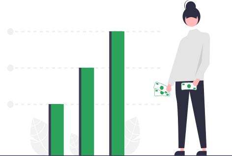

Invista com quem mais inova no setor imobiliário
Conheça o mais novo empreendimento da Yuca no Edifício Copan e invista a partir de R$10.000
Investir em imóveis pode ser simples.
A Yuca conecta você às melhores oportunidades de investimento de renda residencial. Não importa se você já investe no setor imobiliário ou se quer começar agora.
Estabilidade e liquidez
Imóveis com alta taxa de ocupação em localizações estratégicas, reformados e expostos à valorização imobiliária.
Estabilidade e liquidez
Moradia é uma necessidade básica. A Yuca oferece oportunidades reais, estáveis e boas para diversificação
Excelentes retornos
Rendimentos mensais sem esforços, gerados a partir de operações mantidas 100% pela Yuca.
Conheça o projeto
Yuca IV: Edifício Copan
Status: Ativa
Rentabilidade alvo (tir): 23,30% a.a.
Valor da cota: R$ 25.000,00
Valor captado: R$ 580.000,00
Participação: 1.3378% por cota
Nesta captação investidores serão sócios da Yuca em uma empresa que será proprietária de 02 apartamentos de 110 m2 no Edifício Copan, um dos mais famosos prédios do país, situado centro de São Paulo. Os apartamentos serão reformados, mobiliados e equipados, para posterior locação de seus quartos. cada um deles possuiá 4 quartos e 4 banheiros. O aluguel de cada quarto mobiliado e equipado irá variar de R$ 2.600 a R$ 3.070, valor que já inclui condomínio, IPTU, serviço de limpeza e internet. Estes valores estão cerca de 30% abaixo do valor de aluguel de um apartamento de 1 quarto (25-40 m2) na região.
Quem investe com a gente
+500 pessoas já investiram até o momento na Yuca.
Tive a oportunidade de investir em um novo empreendimento da Yuca e foi surpreendente ver como a plataforma trouxe, através da digitalização, inovação e diversidade para o pequeno investidor.
Letícia Moraes
Administradora
Quero investir no Fundo Yuca IV: Copam
O time de especialistas da Yuca vai entrar em contato com você e explicar as vantagens de ter um ativo residencial para renda